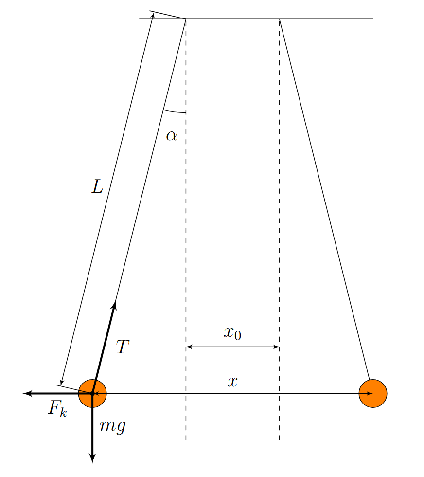
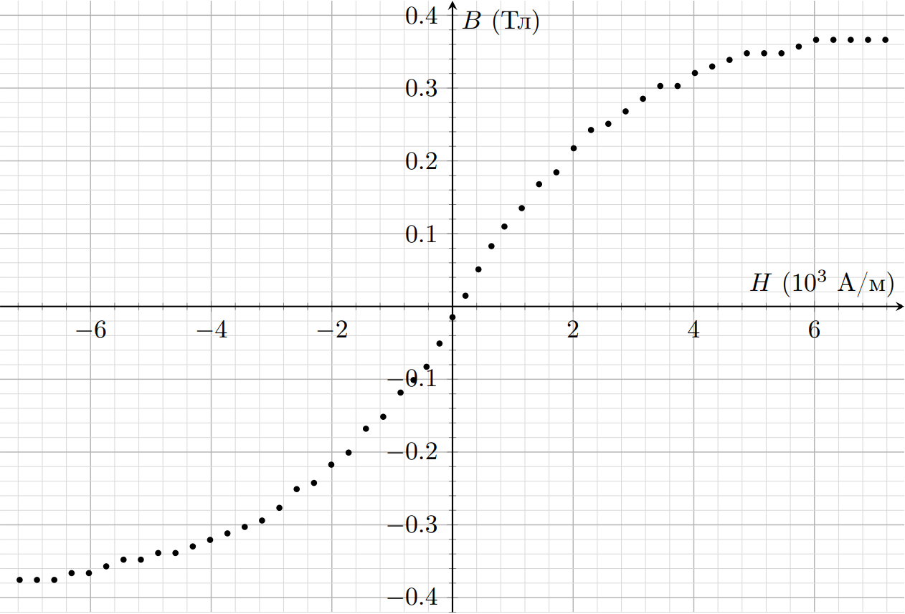
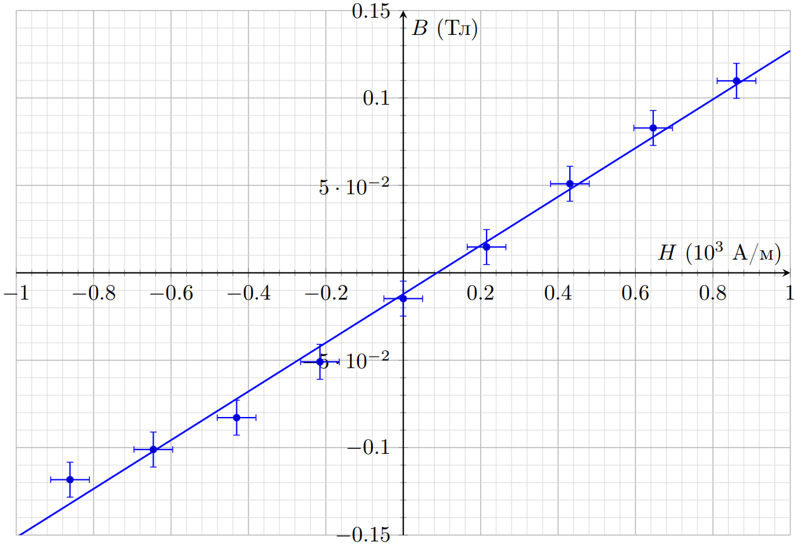
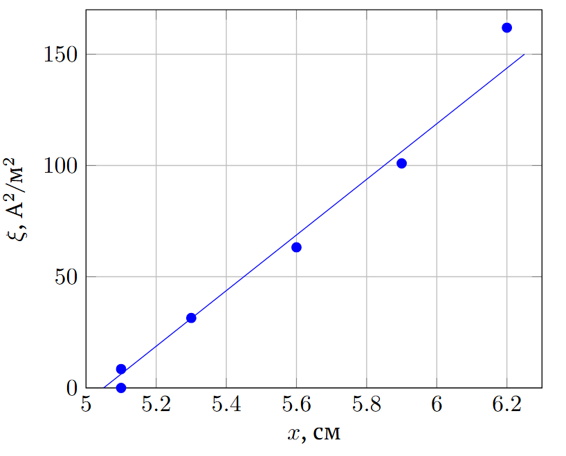
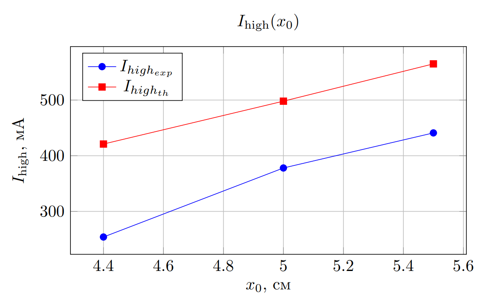
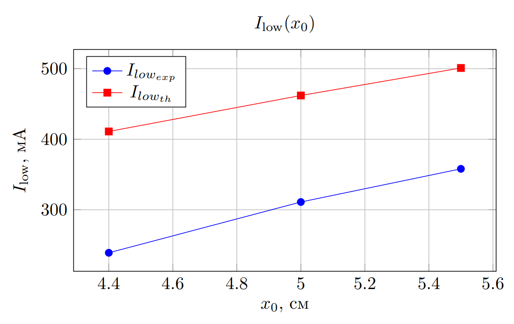
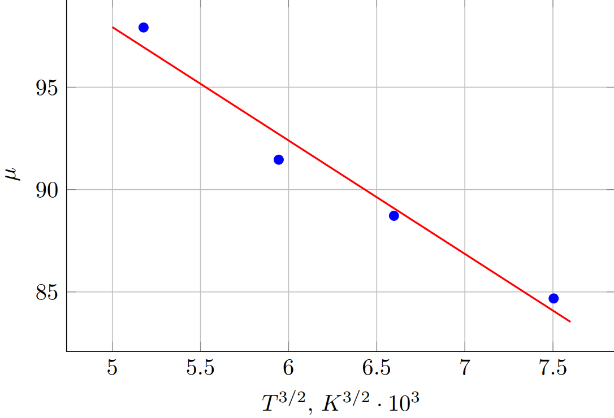

X26 (2026) — English translation
Equipment breakdown if you act contrary to the instructions of the conditions will lead to your disqualification from the tour!
After assembling the setup, invite the audience member to take a photo of your setup.
The photo should show:
The entire installation must be secured and cannot be supported by hands!
Attention! In case of violation of the order of assembly of the installation and recognition of the installation as unsuitable for measurements or absence of photographs, all points related to measurements and data processing WILL BE ASSESSED WITH 0 POINTS!
Let us fix the equilibrium distance between the axes of the solenoids in the absence of current:
Let us consider a solenoid that has deviated by a small angle $\alpha$ from the equilibrium position (see Figure 2). Let's write Newton's II law for this solenoid in projection onto the $y$ axis: $$2F_{k} \cos \alpha=m g \sin \alpha.$$Coefficient $2$ появляется from-за того, что solenoid имеет два полюса (магнитных chargeа), каждый from которых взаимодействует с соседним полюсом другого solenoidа. Taking into account that for малого угла $\alpha$ справедливы формулы $\sin \alpha \approx \alpha \approx \dfrac{x-x_{0}}{2L}$ and $\cos \alpha \approx 1$, transforming II Newton's law:$$F_{k}=\frac{m g}{2} \frac{x-x_{0}}{2L}=\dfrac{\mu_0q_m^2}{4\pi}\left(\frac{1}{x^2}-\dfrac{x}{(x^2+l^2)^{\frac{3}{2}}}\right)$$Во всех partах задачи использовались высота подвеса $h=1.37~m$ and density намотки $n=\dfrac{N}{l}=\dfrac{300}{20.9~cm}=1435~m^{-1}$.

In A4 of the introduction it was said that the magnetic charge of the solenoid is equal to the flux of the magnetic field induction vector $B$ through the end of the solenoid. This flow is equal to: $$\Phi_{B}=B \cdot S$$ where $B$ – value индукции магнитного поля на торце solenoidа, $S$ – area сечения solenoidа. А therefore: $$\mu_0q_{m}=B \cdot S$$ Substituting формулу for магнитного chargeа $q_{m}$ в формулу for силы Кулона, we get: $$F_{k}=\frac{m g}{2} \frac{x-x_{0}}{2L}=\frac{B^2S^2}{4 \pi \mu_0}\left(\frac{1}{x^2}-\dfrac{x}{(x^2+l^2)^{\frac{3}{2}}}\right)$$ Let us express hence индукцию магнитного поля внутри solenoidа $B$ via/through distance $x$ between solenoids:
This means: $$\mu_0q_{m}=B \cdot S$$ Substituting формулу for магнитного chargeа $q_{m}$ в формулу for силы Кулона, we get: $$F_{k}=\frac{m g}{2} \frac{x-x_{0}}{2L}=\frac{B^2S^2}{4 \pi \mu_0}\left(\frac{1}{x^2}-\dfrac{x}{(x^2+l^2)^{\frac{3}{2}}}\right)$$ Let us express hence индукцию магнитного поля внутри solenoidа $B$ via/through distance $x$ between the solenoids:
Since the magnetic permeability of the solenoid core depends on temperature, try to keep the solenoids' temperature within $10~{}^\circ\mathrm C$ of room temperature in your measurements.
Let us remove the dependence of the distance between the solenoids $x$ on the strength of the current $I$ flowing through them, in the current range from $-5~\mathrm{A}$ to $+5~\mathrm{A}$.
Let's calculate the values of $H$ and $B$. Let's construct a hysteresis loop for the given values of $H$ and $B$ (red loop in Figure 3).
$H$, A/m $B$, Tl $H$, A/m $B$, Tl $H$, A/m $B$, Tl $H$, A/m $B$, Tl -7175 -0.37563 -3157 -0.29406 430.5 0.050919 4305 0.329651 -6888 -0.37563 -2870 -0.27663 645.75 0.082839 4592 0.338711 -6601 -0.37563 -2583 -0.25091 861 0.109779 4879 0.347838 -6314 -0.3663 -2296 -0.24244 1148 0.135063 5166 0.347838 -6027 -0.3663 -2009 -0.21731 1435 0.167933 5453 0.347838 -5740 -0.35703 -1722 -0.20076 1722 0.184312 5740 0.357033 -5453 -0.34784 -1435 -0.16793 2009 0.217314 6027 0.366298 -5166 -0.34784 -1148 -0.15155 2296 0.242443 6314 0.366298 -4879 -0.33871 -861 -0.11832 2583 0.250912 6601 0.366298 -4592 -0.33871 -645.75 -0.10107 2870 0.268003 6888 0.366298 -4305 -0.32965 -430.5 -0.08284 3157 0.285315 7175 0.366298 -4018 -0.32066 -215.25 -0.05092 3444 0.302862 -3731 -0.31173 0 -0.01476 3731 0.302862 -3444 -0.30286 215.25 0.01476 4018 0.320657

from the graph from point $А4$ we find:

The solenoids return to their original equilibrium position when current flows through them $I\approx 150~\mathrm{mA}$. Let us express the coercive force:
The dependence $B(H)$ becomes nonlinear at $H>1000~\mathrm{A}/м$, which corresponds to:
To improve measurement accuracy, use linearization, which does not require knowledge of the value $x_0$.
The value of the magnetic susceptibility of the iron core can be calculated using the formula: $$\mu=\frac{1}{\mu_{0}} \frac{\text{d} B}{\text{d} H}$$Максимальную магнитную восfor/atandмчивость $\mu_{\max }$ железный сердечник будет иметь then, когда ratio $\dfrac{\text{d} B}{\text{d} H}$ максимально, that is вблfromand нуля. Максимальный current не должен превышать значения $I_{cr}$, найденного в partе A7 . Condition equalsвесия: $$B=\dfrac{ 1}{S} \sqrt{\dfrac{ \pi \mu_{0} m g (x-x_{0})}{\left(\dfrac{1}{x^2}-\dfrac{x}{(x^2+l^2)^{\frac{3}{2}}}\right)L}}=\mu\mu_0 nI$$ Hence the dependence \[\xi(x)=I^2\cdot\left(\dfrac{1}{x^2}-\dfrac{x}{(x^2+l^2)^{\frac{3}{2}}}\right) \] is linear. Let's recalculate the points and plot the resulting relationship:
Equilibrium condition:
$$B=\dfrac{ 1}{S} \sqrt{\dfrac{ \pi \mu_{0} m g (x-x_{0})}{\left(\dfrac{1}{x^2}-\dfrac{x}{(x^2+l^2)^{\frac{3}{2}}}\right)L}}=\mu\mu_0 nI$$
Hence the dependence
\[\xi(x)=I^2\cdot\left(\dfrac{1}{x^2}-\dfrac{x}{(x^2+l^2)^{\frac{3}{2}}}\right) \]
linear. Let's recalculate the points and plot the resulting relationship:
$I,~\mathrm{A}$ $x,~cm$ $\xi,~\mathrm{A}^2/м^2$ 0 5.1 0 0.15 5.1 8.51 0.3 5.3 31.47 0.45 5.6 63.23 0.6 5.9 100.94 0.8 6.2 161.93
Let's calculate the slope of the resulting graph: \[k=\dfrac{\partial \xi}{\partial x}=\dfrac{\pi m g}{\mu_0 LS^2n^2\mu^2} = (14300\pm600) ~\frac{\text{A}^2}{м^3},\]from: \[\mu=\sqrt{\dfrac{\pi m g}{\mu_0 LS^2n^2 k}}=94\pm4\]

Same as part A: $$B(nI)=\dfrac{ 1}{S} \sqrt{\dfrac{ \pi \mu_{0} m g (x_0-x)}{\left(\dfrac{1}{x^2}-\dfrac{x}{(x^2+l^2)^{\frac{3}{2}}}\right)L}}\approx \dfrac{ x}{S} \sqrt{\dfrac{ \pi \mu_{0} m g (x_0-x)}{L}}$$
$$B(nI)=\dfrac{ 1}{S} \sqrt{\dfrac{ \pi \mu_{0} m g (x_0-x)}{\left(\dfrac{1}{x^2}-\dfrac{x}{(x^2+l^2)^{\frac{3}{2}}}\right)L}}\approx \dfrac{ x}{S} \sqrt{\dfrac{ \pi \mu_{0} m g (x_0-x)}{L}}$$
Abrupt sticking of solenoids occurs at the moment when their equilibrium becomes unstable. Equilibrium condition: \[\dfrac{B^2(nI)S^2L}{x^2}= \pi \mu_{0} m g (x_0-x)\]Differentiate with respect to $x$: \[-2\dfrac{B^2(nI)S^2L}{x^3}=- \pi \mu_{0} m g \]Solving jointly, we obtain: \[x=2x_0/3\]\[B^2(nI)S^2L=\dfrac{4\pi}{27}\mu_{0} m g x_0^3\] $$F_{k}=\frac{m g}{2} \frac{x-x_{0}}{2L}=\dfrac{\mu_0 q_m^2}{4\pi}\left(\frac{1}{x^2}-\dfrac{x}{(x^2+l^2)^{\frac{3}{2}}}\right)$$
After adhesion, the solenoids are in equilibrium due to the reaction force generated when they press against each other. Unsticking occurs at moment $N=0$: $$B(nI_{\operatorname{low}})=\dfrac{ x_1}{S} \sqrt{\dfrac{ \pi \mu_{0} m g (x_0-x_1)}{L}},$$where $x_1=2.5~ cm$ – the distance between the axes of the solenoids when they are pressed closely to each other.
Let's measure the dependences $I_{\operatorname{low},\operatorname{high}}(x_0)$, calculate the corresponding theoretical values and construct the corresponding graphs:
$x_0$, cm $I_{high_{exp}}$ $I_{low_{exp}}$ $B_{high}$ $B_{low}$ $I_{high_{th}}$ $I_{low_{th}}$ 4.40 254 239 0.0720 0.0699 421 411 5.1 378 311 0.0898 0.0818 511 470 5.5 396 321 0.1006 0.0878 565 501


Attention! The issued cores have low thermal conductivity. You can consider the core temperature to be equal to the thermocouple temperature by maintaining the corresponding constant thermocouple temperature for at least 10 minutes.
The issued cores heat up quite slowly. Let's set a constant current value through the coils. After 10 minutes, turn the current to zero and remove the dependence of the distance between the axes of the solenoids on the current through them. Hysteresis can be ignored because it is small and in linearization will affect the constant shift. The maximum current must not exceed the value $I_{cr}$ found in point A8. There should not be a large number of points in the dependencies because the cores will cool down. The equilibrium condition is the same as in Part A: $$B=\dfrac{ 1}{S} \sqrt{\dfrac{ \pi \mu_{0} m g (x-x_{0})}{\left(\dfrac{1}{x^2}-\dfrac{x}{(x^2+l^2)^{\frac{3}{2}}}\right)L}}=\mu\mu_0 nI$$ Hence зависимость ⟦0⟧ линейна. Снимем зависимости $I(x)$ at four different temperatures. The core cools down quite slowly, so as the temperature for the experiment, we will record the temperature corresponding to the ohmmeter readings at the moment the measurements begin.
The equilibrium condition is the same as in part A:
$$B=\dfrac{ 1}{S} \sqrt{\dfrac{ \pi \mu_{0} m g (x-x_{0})}{\left(\dfrac{1}{x^2}-\dfrac{x}{(x^2+l^2)^{\frac{3}{2}}}\right)L}}=\mu\mu_0 nI$$
Hence the dependence
\[\xi(x)=I^2\cdot\left(\dfrac{1}{x^2}-\dfrac{x}{(x^2+l^2)^{\frac{3}{2}}}\right) \]
linear.
Let us remove the dependences $I(x)$ at four different temperatures. The core cools down quite slowly, so as the temperature for the experiment, we will record the temperature corresponding to the ohmmeter readings at the moment the measurements begin.
$R=111~\mathrm{\Omega}$, $T=299~\mathrm{K}$ $I,~\mathrm{A}$ $x,~cm$ $\xi,~\mathrm{A}^2/м^2$ 0 6.1 0 0.15 6.2 5.69 0.3 6.4 21.3 0.45 6.5 46.4 0.6 6.7 77.5 0.75 6.9 113.8 0.9 7.3 145.5
$R=111~\mathrm{\Omega}$, $T=299~\mathrm{K}$
$R=122~\mathrm{\Omega}$, $T=328~\mathrm{K}$ $I,~\mathrm{A}$ $x,~cm$ $\xi,~\mathrm{A}^2/м^2$ 0 6.2 0.0 0.15 6.3 5.5 0.3 6.4 21.3 0.45 6.5 46.4 0.6 6.7 77.5 0.75 7 110.4 0.9 7.2 149.8
$R=122~\mathrm{\Omega}$, $T=328~\mathrm{K}$
$R=131~\mathrm{\Omega}$, $T=352~\mathrm{K}$ $I,~\mathrm{A}$ $x,~cm$ $\xi,~\mathrm{A}^2/м^2$ 0 6.2 0.0 0.15 6.4 5.3 0.3 6.5 20.6 0.45 6.6 45.0 0.6 6.7 77.5 0.75 7 110.4 0.9 7.2 149.8
$R=131~\mathrm{\Omega}$, $T=352~\mathrm{K}$
$R=143~\mathrm{\Omega}$, $T=383~\mathrm{K}$ $I,~\mathrm{A}$ $x,~cm$ $\xi,~\mathrm{A}^2/м^2$ 0 6.2 0.0 0.15 6.3 5.5 0.3 6.4 21.3 0.45 6.5 46.4 0.6 6.7 77.5 0.75 6.9 113.8 0.9 7.1 154.3
$R=143~\mathrm{\Omega}$, $T=383~\mathrm{K}$
We obtain the angular coefficients using least squares. The obtained values are related to the parameters of the cores as follows: \[k=\dfrac{\partial \xi}{\partial x}=\dfrac{\pi m g}{\mu_0 LS^2n^2\mu^2},\]from: \[\mu=\sqrt{\dfrac{\pi m g}{\mu_0 LS^2n^2 k}}\]Calculate the values $\mu(T)$ and construct a linearized graph:
$T,~\mathrm{K}$ $k, ~\mathrm{A}^2/м^3$ $\mu$ $T^{\frac{3}{2}},~\mathrm{K}^{\frac{3}{2}}$ 299 13200 97.92 5177 328 15130 91.46 5944 352 16080 88.72 6598 383 17650 84.68 7504

Angular coefficient of the plotted graph: \[k=-\mu(0)T_c^{-\frac{3}{2}}=-5.54\cdot 10^{-3}~\mathrm{K}^{-\frac{3}{2}},\]Free term: \[\mu(0)=126\]From here: \[T_c=800~\mathrm{K}\]